AngelLoader
Une appli pour jouer aux fan missions sur Dark Project/Thief Gold, Dark Project : L'âge de Métal et Thief : Deadly Shadows, et System Shock 2
Document officiel
Table des matières
Pour commencer
Configuration requise
- Windows 7 SP1, Windows 8.1 ou Windows 10 Anniversary Update, ou supérieur
- .NET Framework 4.7.2 ou supérieur (inclus dans les versions Windows nommées précédemment)
Installation
AngelLoader est seulement en version portable, il doit être placé dans un dossier non protégé (Ne le mettez pas dansProgram Files ou Program Files (x86)).
Quelques exemples de bons emplacements : C:\AngelLoader, C:\Games\AngelLoader, etc...
Paramétrage initial
Lorsque vous exécutez AngelLoader pour la première fois, vous verrez la fenêtre de paramétrage initial :
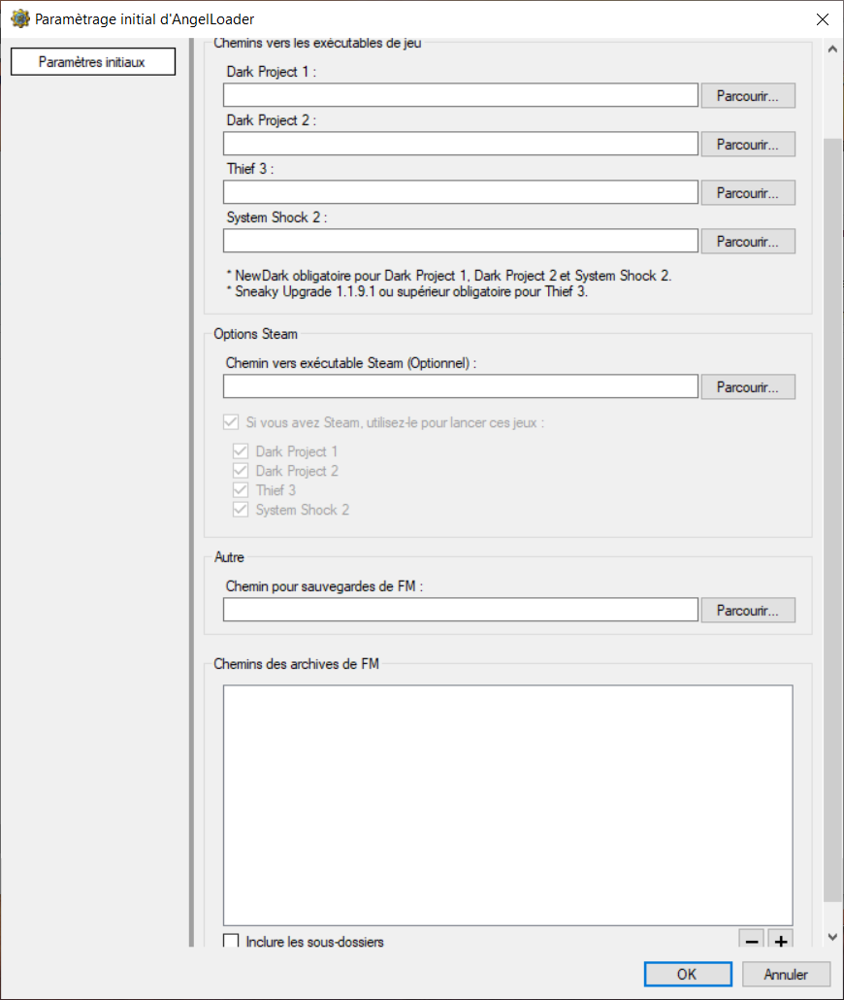
Langues
Si d'autres langues sont disponibles, on peut les choisir à ce moment-là. Les modifications sont immédiates.Chemins d'accès vers les exécutables des jeux
Ici on peut indiquer les fichiers exécutables pour les jeux de la série Dark Project qui sont installés. Ces champs sont optionnels, vous pouvez en remplir quelques-uns ou tous, ou rien. Vous serez tout de même en mesure de voir, gérer toutes vos FM même si vous n'avez pas paramétré les exécutables correspondants. Mais vous ne pourrez pas les installer ou y jouer sauf si vous paramétrez leurs exécutables.Dark Project 1/Thief Gold et Dark Project 2 doivent être patchés avec NewDark pour qu'AngelLoader puisse fonctionner. Thief 3 doit être patché avec le Sneaky Upgrade. Version 1.1.9.1 ou supérieur est recommandé. D'autres versions anciennes jusque la 1.1.3 peuvent fonctionner, elles n'ont pas été testées et ne sont pas officiellement pris en charge.
Chemin d'accès pour sauvegardes de FM
C'est un champ obligatoire. C'est le dossier qui servira à conserver vos sauvegardes, captures d'écran, et/ou vos sauvegardes pleines différentielles lorsque vous désinstallez une fan mission.Chemins d'accès des archives de FM
Ici vous paramétrez le ou les répertoires où se trouvents vos archives de FM (Des fichiers .zip ou .7z). Si vous cochez "Inclure les sous-dossiers", tous les sous-dossiers se trouvant dans les répertoires spécifiés seront analysés pour trouver des archives de FM (NewDarkLoader le faisait aussi). Sinon, seuls les répertoires exacts que vous avez choisis seront analysés. Remarque à propos des répertoires d'archives des fan missions : étant donné que les répertoires multiples sont autorisés, il peut y avoir des fichiers en double. Dans ce cas, AngelLoader va retenir le premier fichier trouvé et va ignorer les fichiers suivants ayant le même nom. Il n'est pas conseillé de mettre les fichiers en double dans vos répertoires d'archives. Mais si vous le faites, tant que ce sont des copies exactes (c-à-d pas de fichiers différents avec le même nom) alors ça va fonctionner. Il est aussi conseillé que vos dossiers d'archives devraient seulement contenir des fichiers de FM et/ou des fichiers de sauvegardes FMSel/NewDarkLoader. AngelLoader est capable de rejeter les archives qui ne sont pas des FM lors de l'analyse mais c'est mieux de ne pas mettre des fichiers qui n'ont rien à voir avec les FM.Fenêtre principale
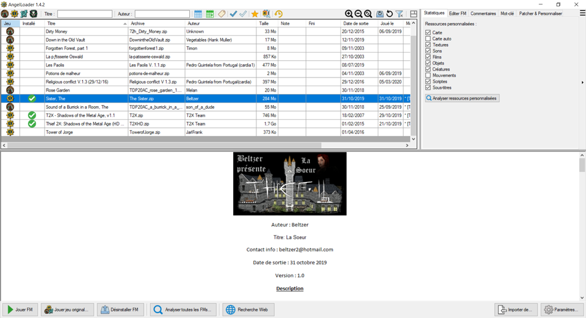
Analyse au démarrage
Lorsque de nouvelles FM sont détectées, elles sont analysées automatiquement. Si vous annulez l'analyse, le type de jeu sera indiqué quand vous cliquerez sur la FM, comme dans Darkloader. Il est conseillé de laisser l'analyse se terminer et tout particulièrement si vous utilisez les onglets de jeu. Ainsi les FM seront dans les bonnes catégories.Barre de filtres
On peut choisir de filtrer sa liste de FM par jeu, titre, auteur, date de sortie, joué le..., mots-clés, fini en (Normal/Difficile/Expert...) et par notes. Si vous avez choisi d'organiser vos jeux par onglets alors ces onglets remplaceront les boutons de filtres de jeu.Fichiers incompatibles ou archives non-FM
Ceci indique les archives inconnues () (Les archives rejetées et considérées comme non-FM), elles sont affichées dans la liste. S'il y a une prise en charge de nouveaux jeux dans le futur, vous pourrez utiliser ceci pour voir les archives non-FM et les réanalyser une par une.FMs récemment ajoutées en haut de la liste
Les FMs récemment ajoutées seront en surbrillance et affichées en haut de la liste. Il sera ainsi plus facile de retrouver les FMs récemment téléchargées, par exemple. Le nombre de jours maximum pour qu'une FM soit considérée comme récente peut être défini dans les paramètres FMs récentes. Par défaut, c'est 15 jours.Rafraîchir du disque
Recharge la liste des FM du disque. Cela se fait lors du lancement du programme mais cette fonction est utile si vous avez ajouté des nouvelles FM alors qu'AngelLoader est lancé.La liste peut être réactualisée du disque en appuyant sur
Maj-F5 quand la liste des missions est active.
Rafraîchir la liste
Quand vous éditez les données d'une mission, la liste des missions n'est pas réactualisée. C'est pour empêcher qu'une mission qui ne correspond plus aux filtres de disparaître des critères de filtres en plein milieu de son édition. Si vous avez édité une FM et que vous voulez refiltrer la liste, cliquez sur ce bouton.La liste peut être réactualisée en appuyant sur
F5 quand la liste des missions est active.
Supprimer les filtres
Supprime les filtres.Rafraîchir l'affichage
Réactualise la fenêtre principale à ses dimensions par défaut.Séparateurs modifiables de fenêtres
Vous pouvez faire glisser les séparateurs à l'horizontale ou verticale pour redimensionner les sections de la fenêtre. Si vous faites glisser votre souris dans le coin entre deux séparateurs, vous pouvez redimensionner les trois sections principales à la fois.Zone Lisez-moi
C'est la zone où est affiché le Lisez-moi de la FM. S'il y a plusieurs Lisez-moi, AngelLoader va tenter d'afficher celui qui ne contient pas de spoilers (Liste du butin, solutions, etc...). S'il en trouve un, il chosit ce Lisez-moi automatiquement. S'il n'y a pas la possibilité de trouver un Lisez-moi sans spoiler avec certitude, vous aurez le choix du Lisez-moi à voir. Dans ce cas, il y aura une liste de Lisez-moi en affichage. Une fois le Lisez-moi sélectionné, vous aurez l'option par la suite de choisir un autre Lisez-moi d'une liste déroulante qui va apparaître dans le coin en haut à droite (Voir Paramètres du Lisez-moi).Paramètres du Lisez-moi
Dans le coin en haut à droite de la zone du Lisez-moi se trouve un panel d'outils pour choisir un lisez-moi, zoom avant, zoom arrière, affichage normal et plein écran. Lorsque l'on clique sur Plein écran, la zone du lisez-moi remplit la fenêtre entière. Cliquez encore une fois sur ce bouton pour reprendre la taille normale. Ces contrôles apparaissent quand la souris survole la zone du lisez-moi et ils disparaissent quand la souris n'est plus dans cette zone. De plus, on peut zoomer le lisez-moi en appuyant surCtrl+-, Ctrl++ et Ctrl-0, ou en laissant appuyer Ctrl avec la roulette de la souris quand le pointeur est au-dessus du lisez-moi.
Jouer FM
Cliquez sur ce bouton pour jouer la FM sélectionnée. Si la FM n'est pas installée, elle le sera automatiquement en premier.Jouer jeu original
Cliquez sur ce bouton et vous aurez la liste des jeux pris en charge. Seuls les jeux dont vous avez indiqués un chemin seront activés. Les autres seront grisés. En cliquant sur un des jeux, vous le lancez sans charger de FM.Si vous avez NewDark 1.27 ou supérieur et que vous avez installé l'option Multijoueur (Il y a Thief2MP.exe dans votre dossier de Dark Project 2) alors en plus, vous aurez Thief 2 (Dark Project 2) en mode multijoueur.
Installer/Désinstaller FM
Si la FM sélectionnée n'est pas installée, cette fonction l'installe. Sinon cette fonction la désinstalle.Analyser toutes les FMs
Cela permet d'analyser toutes les FM de la liste. En cliquant dessus, on verra apparaître une fenêtre et on peut choisir ce que l'on veut analyser.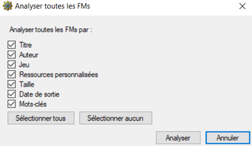
Seuls les champs choisis seront analysés et remplacés. Les cases qui ne sont pas cochées, ne seront pas modifiées. L'exception de la réécriture concerne les mots-clés : les mots-clés seront toujours les mêmes ou il y aura des ajouts mais ne sont pas remplacés.Recherche Web
Ceci permet de chercher sur le web quelque chose sur la mission sélectionnée. Vous pouvez paramétrer l'URL de recherche dans les Paramètres.Importer de...
En cliquant sur ce bouton, on a une liste des autres applis de FM à partir desquelles on peut importer des données. Les applis prises en charge sont DarkLoader, NewDarkLoader et FMSel. Si vous avez beaucoup de données de FM d'une de ces applis (Commentaires, notes, statut de difficulté, etc...), vous pouvez les importer dans AngelLoader, ce qui remplacera les infos existantes (Alors soyez prudent).Paramètres
Affiche les paramètres.Liste des Missions
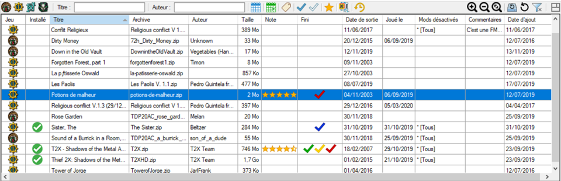
C'est la fenêtre principale où les FM sont affichées, triées, filtrées. On peut changer la taille des colonnes, la visibilité et l'ordre. Faites glisser une colonne à gauche ou à droite pour changer son ordre. En cliquant sur l'entête d'une colonne, on la trie. En cliquant une première fois, l'ordre est ascendant et une deuxième fois, l'ordre est descendant. En double-cliquant sur la séparation droite de la colonne, on ajuste automatiquement la largeur selon le contenu.Un clic droit sur n'importe quel entête de colonne ou un espace blanc dans la liste amène le menu contextuel des entêtes de colonnes.
Un clic droit sur une FM amène le menu contextuel de la FM.
Quand une mission est sélectionnée, un double-clic ou l'appui sur Entrée permet de jouer à la FM. Par défaut, on vous demande une confirmation dans ce cas. Voir Jouer une FM en double-cliquant/Entrée.
Appuyez sur la touche Suppr quand une FM est en surbrillance pour supprimer l'archive de la FM du disque. Une confirmation sera demandée avant la suppression.On peut zoomer la liste des FMs avec les boutons de zoom se trouvant sur la barre supérieure ou avec Ctrl++,Ctrl+- et Ctrl+0, ou avec Ctrl+roulette de la souris.
Colonnes
Jeu
Affiche l'icône du jeu de la mission. Si c'est inconnu, elle sera vide. Les icônes sont :
- Dark Project 1/Thief Gold
- Dark Project 2
- Thief 3
- Une mission non prise en charge ou une archive qui n'est pas une FM (Ceci apparaît seulement si le filtre Incompatibles ou non-FM est activé).
Installé
Affiche cette icône si une FM est installée. Dans le cas contraire, c'est vide.Titre
Affiche le titre de la FM, prenant en compte le paramètre Tri. Si aucun titre n'a été analysé ou le titre est introuvable, le nom de l'archive de la FM sera affiché sans l'extension. Si le nom de l'archive n'a pas pu être déterminé, c'est le nom du dossier dans lequel est la FM qui sera affiché.Archive
Affiche le nom de l'archive de la FM avec l'extension.Auteur
Affiche le nom de l'auteur de la FM, s'il a été trouvé.Taille
Affiche la taille compressée (de l'archive) de la FM, quand c'est possible. Si l'archive est introuvable, cela affiche la taille décompressée (installée) de la FM.Note
Affiche la note de la FM selon le style d'affichage de la note.Fini
Affiche une icône représentant le ou les niveaux de difficulté avec lequel vous avez fini la FM.
- Normal (Facile pour Thief : Deadly Shadows)
- Difficile (Normal pour Thief : Deadly Shadows)
- Expert (Difficile pour Thief : Deadly Shadows)
- Extrême (Expert pour Thief : Deadly Shadows)
- Inconnu
Date de sortie
Affiche la date de sortie de la FM dans le format choisi.Joué le
Affiche la dernière date de jeu dans le format choisi.Date d'ajout
Affiche la date d'ajout de la FM à la liste.Mods désactivés
Affiche les mods désactivés, s'il y en a, pour la FM. Si tous les mods sont désactivés pour la FM, cela affichera "* [Tous]".Commentaires
Affiche les commentaires de la FM, s'il y en a, jusqu'aux 100 premiers caractères ou la première ligne, quelle qu'elle soit.Menu contextuel des entêtes de colonne
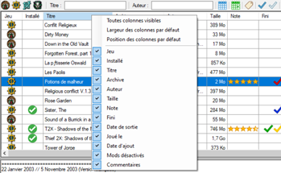
En cliquant-droit sur un entête de colonne ou un endroit vide de la liste principale fera apparaître ce menu. Ici on peut choisir de rendre visible ou pas les colonnes, de remettre par défaut leur visibilité, largeur et position.Menu contextuel des FM
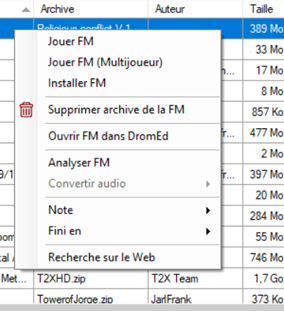
Un clic droit sur une FM fera apparaître ce menu.Jouer FM
Joue la FM sélectionnée. Si la FM n'est pas installée, elle sera d'abord automatiquement installée.Jouer FM (multijoueur)
Ce choix apparaît seulement si Thief2MP.exe a été trouvé dans le dossier de Dark Project 2. En cliquant dessus, on peut jouer à la FM en mode multijoueur (NewDark 1.27 ou supérieur obligatoire). Si la FM n'est pas installée, elle sera d'abord automatiquement installée.Installer / Désinstaller FM
Si la FM sélectionnée n'est pas installée, cela l'installera. Sinon elle sera désinstallée.Supprimer l'archive de la FM
Vous pouvez supprimer l'archive de la FM du disque. Vous pouvez aussi supprimer en appuyant sur la touche Suppr. Dans les deux cas, une confirmation sera demandée.Ouvrir FM dans DromEd
Ce choix apparaîtra seulement si DromEd.exe se trouve dans le dossier du jeu. En cliquant dessus, la FM sélectionnée sera chargée dans DromEd, en l'installant, si nécessaire.Cette option n'est pas disponible pour Thief : Deadly Shadows.
Analyser FM
Cela analysera la FM sélectionnée. Si vous ne voulez analyser que certains champs, voir l'onglet Editer FM.Sous-menu Convertir audio
Ce menu contient les mêmes options de conversions audio que dans les Paramètres, mais on peut les déclencher quand on veut à partir de là.Cette option est seulement disponible pour les FMs installées.
Sous-menu des notes
Ici on peut donner une note à la FM sélectionnée. Les notes apparaissent selon la forme choisie dans les Paramètres : soit de 0-10 ou 0-5.Sous-menu 'Fini en'
On peut déterminer le ou les niveaux de difficulté avec lequel vous avez fini la FM sélectionnée.Inconnu - C'est principalement pour la compatibilité des données importées de FMSel qui ne marque pas les difficultés dans sa valeur.
Pour Dark Project 1/Thief Gold et Dark Project 2, les autres difficultés sont Normal, Difficile, Expert et Extrême.
Pour Thief : Deadly Shadows, ce sont Facile, Normal, Difficile et Expert.
"Extrême" n'est pas une difficulté officielle de Dark Project/Thief mais c'est indiqué pour la compatibilité des données importées de DarkLoader ou alors si vous voyez que ça correspond à une difficulté inhabituelle (Ghost, etc...).
Recherche sur le web
Cliquez pour rechercher des infos sur le web pour la mission sélectionnée. Vous pouvez choisir l'adresse URL pour la recherche dans les Paramètres.Onglets en haut, à droite
Grâce à ces onglets, on peut éditer les données de la FM et voir plus de détails à son sujet. On peut faire glisser ces onglets pour changer l'ordre comme on veut. On peut aussi les activer/désactiver avec le bouton de menu en haut à droite (Trois barres horizontales).Bouton Visible/Caché (Triangle noir)
Cliquez sur le petit triangle pour cacher les onglets en haut, à droite. Cliquez à nouveau dessus pour les rendre visibles.Statistiques
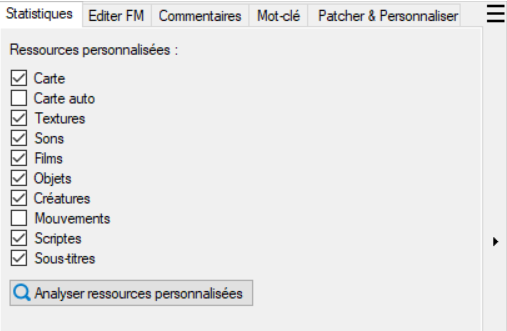
On peut voir quelles sont les ressources personnalisées dans la FM. Si la FM n'a pas été analysée pour les ressources personnalisées, aucune n'apparaîtra. Si c'est une FM pour Thief 3, rien n'apparaîtra, l'analyse des ressources persos pour ce jeu n'est pas prise en charge.Editer FM
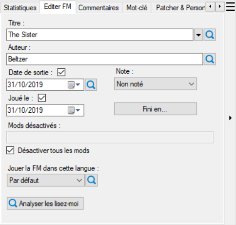
Vous pouvez éditer les informations d'une FM. Si vous voulez réanalyser un champ particulier, cliquez sur l'icône à côté de ce champ.Titres différents
Parfois de multiples titres différents peuvent être trouvés. Si le titre par défaut apparaît mal, cliquez sur le petit triangle noir pour voir un autre titre disponible. En cliquant sur un titre alternatif, on change le titre de la FM en celui que vous avez sélectionné.Date de sortie et Joué Le...
Si une date n'a pu être trouvée ou détectée, la case à cocher correspondante sera vide et il n'y aura pas de date.Mods désactivés
Vous pouvez désactiver certains mods par mission ici. Pour voir les mods que vous avez installés, regardez danscam_mod.ini dans le dossier de Dark Project 1/Thief Gold ou Dark Project 2. La ligne doit être dans cette syntaxe modname1+modname2+modname3 etc... Pour désactiver le Enhancement Pack 2, on devrait avoir :
ep2
Pour désactiver le Enhancement Pack 2 et le HD mod, ce serait :
ep2+hdmod
Pour désactiver tous les mods pour la fan mission courante, cochez la case Désactiver tous les mods.
Sélection de la langue
Vous pouvez choisir de jouer à une FM dans une langue en particulier. Seules seront disponibles les langues que la FM propose.Commentaires
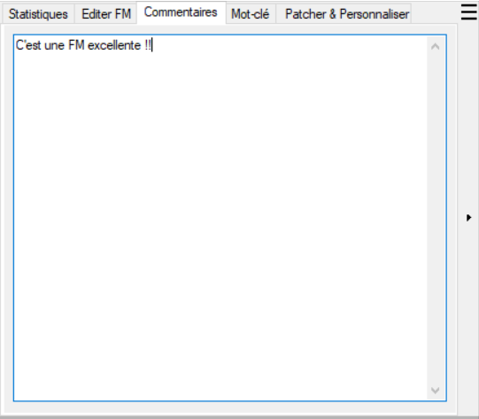
Entrez un commentaire pour la FM. Ce commentaire sera aussi affiché dans la colonne des Commentaires (jusqu'aux 100 premiers caractères ou la première ligne, quelle que soit son ordre). Il sera actualisé dès que vous écrirez.Mots-Clés
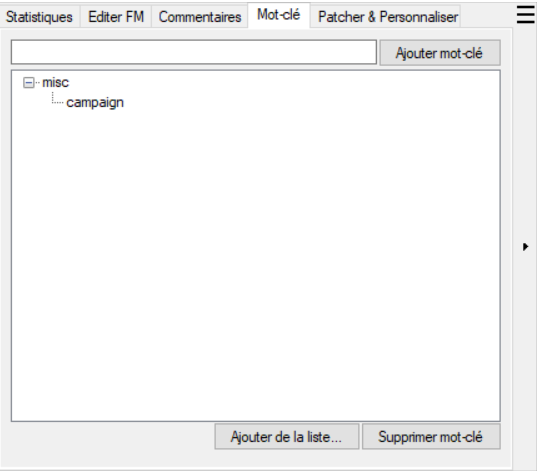
Vous gérez les mots-clés. On peut cliquer sur Ajouter de la liste... pour choisir un mot-clé de la liste globale (cela inclut des règles prédéfinies aussi bien que d'autres mots-clés qui ont été trouvés dans d'autres FM). Ou vous pouvez taper dans le champ texte et vous verrez une liste de mots-clés apparaître au fur et à mesure. S'il n'y a pas de correspondance de mot-clé ou de catégorie, une nouvelle sera créée. La syntaxe pour créer un nouveau mot-clé estcategory: tag. Si vous n'indiquez pas de catégorie pour le mot-clé, il sera placé dans la catégorie misc.
Patcher & Personnaliser
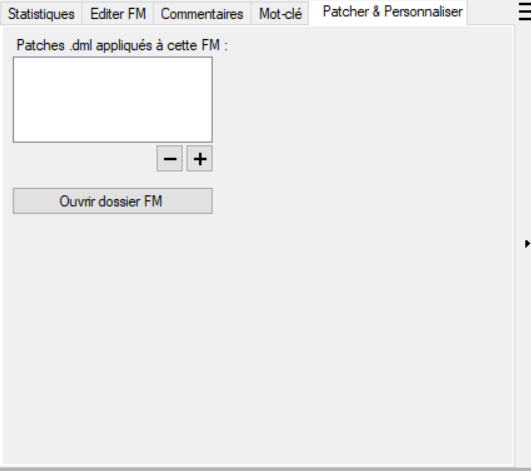
On peut appliquer des patches et des personnalisations pour la FM.Patches .dml
Certaines anciennes Fan Missions ne fonctionnent pas comme prévu avec le NewDark. Il y a pas mal de patches pour ça. Si vous avez des fichiers patches .dml, ici, vous pouvez les ajouter ou les enlever dans le dossier d'installation de la FM. Si vous avez choisi le paramètre de sauvegarde "Tous les fichiers modifiés/ajoutés/supprimés", alors les patches seront sauvegardés et restaurés lors de la réinstallation suivante de la FM.Les patches .dml ne sont pas pris en charge par Thief : Deadly Shadows.
Ouvrir dossier FM
Si vous voulez modifier manuellement le dossier d'installation de la FM, vous pouvez le faire ici.REMARQUE ! Il y a un fichier spécial dans les dossiers de FM,
fmsel.inf, qui ne doit pas être éffacé. Ce fichier contient des métadonnées, et est, de par sa nature, exclu des sauvegardes différentielles. AngelLoader pourra parfois le regénérer ou fonctionnera sans, mais en l'effaçant, c'est s'exposer à des ennuis. Ne le faites pas.
Paramètres
Chemins
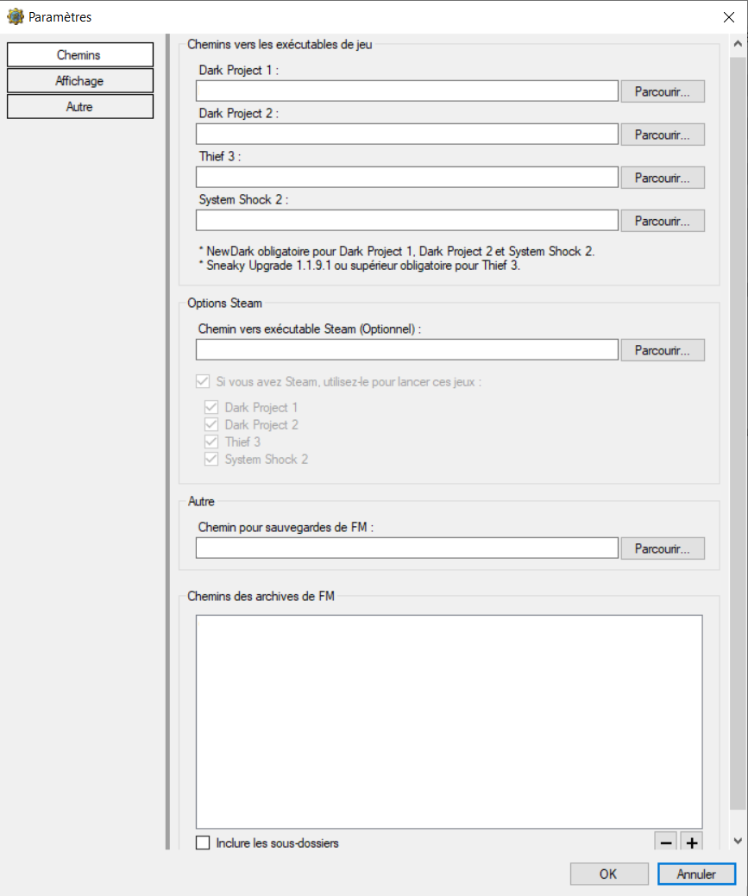
Les paramètres sont les mêmes que dans le Paramètrage initial, à l'exception des langues qui est dans Autre. Voir Paramètrage initial pour les explications de ces paramètres.Affichage
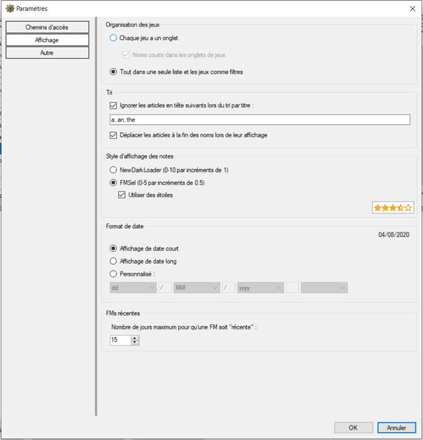
Organisation des jeux
On peut choisir si on veut voir les jeux dans leur propre onglet ou une liste de FM pour tous les jeux, on peut filtrer en cliquant sur les icônes de jeux correspondantes. Quand "chaque jeu a un onglet", chaque jeu aura sa FM sélectionnée et ses filtres correspondants. L'organisation des jeux par onglet peut être plus claire mais si vous voulez trier sans distinction de jeu (Comme, par exemple, trouver toutes les missions d'un auteur qui a créé des FM pour plusieurs jeux) alors ce sera peut-être mieux de n'avoir qu'une grande liste.Tri
On peut choisir d'omettre les articles de début de titre lors du tri des FM. Par exemple, la FM "The Seven Sisters" commence par un "S". Si on choisit de déplacer les articles à la fin des noms lors de leur affichage, alors "The Seven Sisters" deviendra "Seven Sisters, The". Les articles par défaut sont "a, an, the", mais on peut en rajouter (pour la prise en charge dans d'autres langues). Ces articles ne font pas partie de la fonctionnalité normale de localisation car ce sont des noms de Fan Missions, qui peuvent être dans n'importe quelle langue. C'est pour cela que le paramètre de langue général ne s'applique pas à elles.Style d'affichage des notes
On peut choisir le style d'affichage des notes pour une FM (0-10, 0-5, ou 0-5 avec des étoiles).Format de date
C'est l'affichage de la date : court ou long, selon le PC, ou personnalisé.FMs récentes
Quand on clique sur FMs récemment ajoutées en haut de la liste, seules les FMs ajoutées durant le nombre maximum de jours seront incluses.Autre
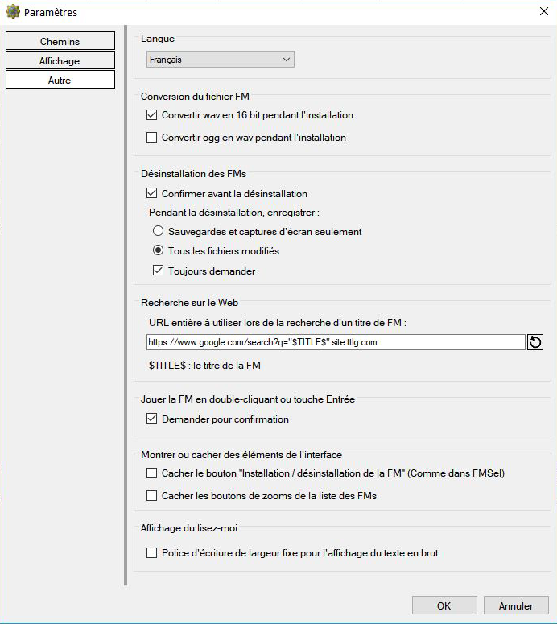
Langue
On peut choisir une autre langue si elle est disponible. Le changement est immédiat.Convertir wav en 16 bit pendant l'installation
Tout dépend de votre système, les fichiers wav supérieurs à 16 bit peuvent être la cause de problèmes audio lorqu'on joue à Dark Project 1 ou 2 comme un bruit statique intermittent ou constant. En convertissant tous les fichiers wav en 16 bit, ce problème sera résolu, la perte de fidélité ne sera pas perceptible. Cette option est activée par défaut.Cette option n'a aucun effet pour Thief : Deadly Shadows.
Convertir ogg en wav pendant l'installation
D'après le manuel de FMSel :Le jeu est capable de prendre en charge les fichiers OGG mais dans certaines circonstances, on peut avoir de courtes saccades et sur des PC moins puissants, des problèmes de performance sur de grandes missions ou avec de grands fichiers OGG. Dans ces cas-là, le problème peut être résolu en convertissant les OGG en WAV pendant l'installation.
Cette option n'a aucun effet pour Thief : Deadly Shadows.
Confirmer avant la désinstallation
Lorsque c'est activé, on vous demandera une confirmation avant la désinstallation d'une FM.Sauvegarder les fichiers pendant la désinstallation
Souvent en désinstallant une FM, vous voulez conserver vos sauvegardes et vos captures d'écran pour les récupérer à la prochaine réinstallation. On peut aussi choisir de sauvegarder tous les fichiers modifiés. Dans ce cas, la sauvegarde incluera aussi tous les fichiers se trouvant dans le dossier d'installation de la FM qui ont été ajoutés, supprimés ou modifiés par comparaison aux fichiers se trouvant dans l'archive. C'est très utile si vous avez ajouté des patches .dml à la FM, ou fait d'autres modifications comme la création/modification d'un fichier fm.cfg, ou réparer des fichiers STR, etc... AngelLoader est compatible avec les patches, l'option est activée par défaut. On peut aussi choisir une confirmation à chaque sauvegarde de données lors de la désinstallation d'une FM.Recherche sur le Web
On peut éditer l'adresse web (URL) de recherche des FM sur le net. La ligne$TITLE$ qui est placée dans l'URL, est l'endroit où le titre de la fan mission apparaît. Par exemple, si l'URL est :
https://www.google.com/search?q="$TITLE$" site:ttlg.com
Et que le titre de la FM sélectionnée est "Broken Triad", alors l'adresse web lancée dans votre navigateur sera :
https://www.google.com/search?q="Broken Triad" site:ttlg.com
Jouer la FM en double-cliquant ou touche Entrée
Quand vous double-cliquez sur une FM de la liste ou que vous appuyez sur la touche Entrée du clavier alors qu'une FM est sélectionnée, elle se déclenchera. Cochez la case "Demander pour confirmation" afin de prévenir un double-clic ou un appui de touche accidentel.Cacher le bouton "Installation / Désinstallation de FM"
Cochez cette case pour prévenir un clic inopiné. Toujours possibilité d'installer/désinstaller les FM par le menu contextuel des FM.Cacher les boutons de zoom de la liste des FMs
On peut zoomer la liste des FM avec le clavier ou Ctrl+roulette de la souris. Vous pouvez cacher ces fonctions pour gagner de la place.Police d'écriture de largeur fixe pour du texte brut
La lecture de certains Lisez-moi peut être plus facile avec une police d'écriture de largeur fixe. Cette option est valable seulement pour les lisez-moi avec du texte brut (simple). Les autres fichiers textes auront leur propre police d'écriture. C'est similaire au DarkLoader.Appendices
Langues
AngelLoader prend en charge la langue de l'utilisateur dans l'interface. Les nouvelles langues sont à définir dans les fichiers de langue qui doivent être placés dans le dossierData\Languages. Un fichier English.ini est inclus dans ce dossier comme exemple, les autres fichiers de langue sont disponibles en téléchargement séparé. Les fichiers de langue utilisent un format simple ini et doivent être sauvegardés avec l'encodage UTF8 pour garantir un affichage correct du texte.
La plupart des éléments de l'interface seront automatiquement ajustés à la longueur des lignes traduites mais quelques-uns ne le seront pas, en particulier les filtres de dates et de notes, et des boutons de filtres de mots-clés. C'est au traducteur de s'assurer que tout s'affiche correctement.
Formats pris en charge
Fichiers d'archives
Les fichiers Zip (.zip) et 7-Zip (.7z) sont pris en charge. Mais voir ici pour une remarque au sujet des fichiers 7-Zip.Fichiers audio
Les fichiers MP3 (.mp3), Ogg Vorbis (.ogg) et Wave (.wav) sont pris en charge dans les fan missions. Les fichiers MP3 seront automatiquement convertis en fichiers WAV pendant l'installation, NewDark ne pouvant pas les jouer directement.Fichiers Lisez-moi
Les fichiers texte brut (.txt), Rich text (.rtf), HTML (.htm, .html) et les GarrettLoader Markup Language (.glml) sont pris en charge. Les fichiers HTML sont plus élaborés que les autres formats mais on peut les voir seulement avec un navigateur web. On ne peut pas les voir dans AngelLoader en lui-même, il y a une fonction qui permet de voir le fichier avec le navigateur web de l'utilisateur.Remarque pour les auteurs à propos des fichiers 7-Zip (Ne pas les utiliser)
FMSel, l'appli de fan mission officielle de NewDark, a toujours pris en charge les fichiers 7-Zip (.7z), d'autres applis de FM (NewDark) ont suivi le pas. AngelLoader prend en charge aussi ces fichiers pour leur compatibilité pratique. Cependant, je pense que le format 7-Zip n'est pas adapté pour un format d'archive de Fan Mission, pour les raisons suivantes :
- Les fichiers 7z files sont, par défaut, des archives compactes. Ce qui veut dire qu'il n'est pas possible de décompresser individuellement les fichiers dans l'archive de façon aléatoire : l'archive doit être décompressée du début à la fin jusqu'à ce que le fichier désiré soit trouvé. C'est bien pour une simple installation, l'archive doit être extraite en entier mais pour l'analyse d'une FM, c'est beaucoup trop lent. En fait, lorsque l'analyse d'AngelLoader rencontre un fichier 7z, il extrait tout le fichier dans un dossier temporaire sur le disque dur car c'est plus rapide en moyenne que de chercher et lire ce qu'il faut partout dans une archive compacte compressée.
- Les fichiers 7z sont plus longs à extraire en entier.
Remerciements et crédits
J'aimerais remercier les personnes suivantes, dans le désordre :Dahenjo pour son aide à la détection de bugs et la suggestion d'idées.
Xanfre pour sa contribution à d'excellentes améliorations pour le fonctionnement du RichTextBox.
EnYB0La pour avoir lancé l'écriture de ce qui est devenu le FMScanner, le module d'analyse d'AngelLoader. Sans ça, je n'aurais jamais essayé de créer un programme autonome de FM prenant en charge le NewDark !
Björn Henke et Telliamed pour la création du DarkLoader, qui fut, de facto, l'appli standard pour les FM de Dark Project pendant des années et l'inspiration première pour l'interface d'AngelLoader et sa nature autonome.
R Soul pour la création du NewDarkLoader, une appli moderne avec l'interface classique du DarkLoader, et aussi une source d'inspiration pour quelques aspects d'AngelLoader.
potterr pour la création du GarrettLoader, le premier programme (tout autant que je sache) à prendre en charge les trois jeux de la série Dark Project, la toute première appli que j'ai utilisée et la source des fichiers au format GLML.
Le Corbeau, le groupe mystérieux derrière NewDark et le programme FMSel, la première appli NewDark officielle pour fan missions.
Tous ces programmes ont été d'une aide formidable pour le développement d'AngelLoader, merci à tous !
J'aimerais aussi remercier Looking Glass Studios pour la création de Dark Project/Thief, la communauté TTLG qui perpétue la vie du jeu et mes spectateurs qui me regardent sur Youtube faire l'andouille depuis des années.
Stefan Key pour la traduction du document officiel en français.
AngelLoader utilise les librairies suivantes :
7z.dllSquidBox.SevenZipSharp
ffmpeg
FFmpeg.NET
GlobalMouseKeyHook
SimpleHelpers.Net
UDE.NetStandard
Ookii Dialogs
Portions modifiés de code de .NET Core's System.IO.Compression (Adapté pour la performance de l'analyse)
AngelLoader est open-source sous licence MIT. Vous pouvez voir la source à AngelLoader's GitHub repository.